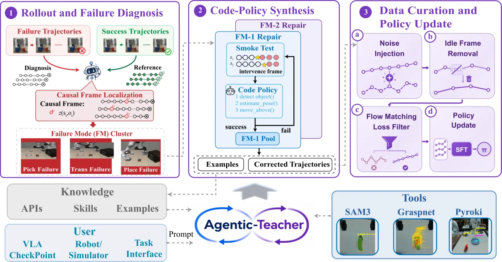
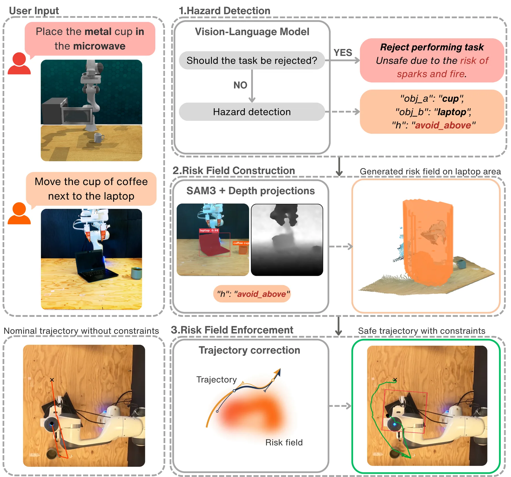

新论文 · 日期 2026-11-16 · score 14.5 · A层 · Embodied Navigation / VLN / Spatial Reasoning · cs.RO, cs.AI, cs.CV, cs.LG
内容级别：半海报
作者：Maitree Meher, Siming He, S. Shankar Sastry, Jitendra Malik, Claire Tomlin, Jonas Frey
评分 14.5/10
VLN预算条件化Bellman 专家特权监督HM3D实机部署
一句话工作总结：一句话：它把“还剩多少预算”做成显式状态变量，并且证明“专家越强不等于教得越好”——决定监督质量的是专家的动作是否依赖学生永远拿不到的信息。对做可靠状态估计的人，这篇真正可借的是评测协议（同一场景/起点/解码，只改计数文本）和“可感知/可学习才保留，只能靠行动发现才扣留”的抽象原则。
论文研究“预算条件化目标搜索”：给定目标类别与显式动作预算，智能体要在预算耗尽前找到尽可能多的不同实例，发现由相机视场与临近程度几何判定。作者把专家设计表述为“场景抽象的选择”——同一条预算索引的 Bellman 递推，作用在全环境的不同抽象上，就得到知道不同信息的专家：对象级 Bellman 专家拿到全部目标位置，问题退化为预算化路径规划；房间级 Bellman 专家只保留已观测房间连通性、门口证据与跨场景语义先…
A rescue robot entering a building with thirty seconds on the clock should sprint toward the single most promising room; given ten minutes, it should instead explore a broader tour. Yet vision-language-navigat…

新论文 · 日期 2026-11-16 · score 13.0 · A层 · Embodied Navigation / VLN / Spatial Reasoning · cs.RO, cs.AI, cs.CV
内容级别：半海报
作者：Jiaxin Huang, Chengxing Lin, Xiaoyu Luo, Sirui Chen, Jingyu Guo, Aolin Li, Kairui Chen, Rui Zhen, Cheng Wen, Kerui Gu, Shunyao Wang, Zhihui Peng, Shaoli Huang
评分 13/10
人形机器人VLN室内到室外数字孪生DAgger目标接近
一句话工作总结：一句话：这不是又一个 VLN 模型，而是一份把“基准 episode（10–15 m 室内）”与“真实 mission（约 100 m 室内到室外）”之间的三处缺口（问题定义、数据来源、模型到行走机器人）逐条补齐的工程报告。最值得抄的是两个小模块：用里程计把“过时的像素目标”重新锚定的 goal adapter，以及用掩码内 LiDAR 点中值给出目标三维位置、再交给 P 控…
室内到室外的长程导航对人形机器人仍是开放问题：一条指令覆盖房间、门与道路，相机随步态晃动。X-Nav 是作者所知首个让双足人形机器人完成语言指令、从室内走到室外的长程任务的系统，覆盖从数据到部署的完整链路。数据引擎在开源场景、部署点的数字孪生与真实机器人三处采集数据；导航模型 MELIOR 只用机器人内置相机的 RGB，分两版：MELIOR-A 预测动作，MELIOR-N 预测导航目标；智能体工作流 X-Navar…
Long-horizon navigation from indoors to outdoors remains an open problem for humanoid robots: one instruction covers rooms, doors and roads, and the camera moves with the gait. Worken, AGIBOT's measure of prod…

新论文 · 日期 2026-11-16 · score 9.5 · A层 · Robotic Foundation Models / VLA · cs.RO
内容级别：半海报
作者：Gongyue Teng, Yuqing Xie, Yixian Zhang, Feng Gao, Shu'ang Yu, Jiaji Rao, Sukai Wang, Guanghui Ren, Ya Zhang, Maoqing Yao, Yu Wang, Chao Yu, Xinlei Chen
评分 9.5/10
VLA 后训练失败驱动编码智能体数据筛选flow matchingDAgger
一句话工作总结：一句话：它把 DAgger 里“人来纠正”的那一环换成“写程序来纠正”，但真正的贡献在于后半段——把程序生成的轨迹重新投影回基模型的流形上（噪声扩覆盖、删冗余、用冻结模型的 flow-matching 损失做准入）。这三步里最后一步最值得抄：它给了一个用模型自身损失判断“这条合成数据是否可学”的廉价判据。
改进预训练 VLA 需要能针对其弱点、并提供有效监督的示范。编码智能体可以通过与环境交互自主生成示范，但“执行成功”并不等于“对 VLA 学习有效”。论文提出 Agentic-Teacher：给定一个 VLA checkpoint、任务说明与环境工具，引擎分析失败的 rollout、选择干预状态，并通过执行反馈迭代开发闭环代码策略；通过验证的策略成为可复用的示范生成器，从 VLA 吃力的状态采集成功续接轨迹。为让这…
Improving a pretrained vision-language-action (VLA) model requires demonstrations that address its weaknesses and provide effective supervision for learning. Coding agents can autonomously generate demonstrati…

新论文 · 日期 2026-11-16 · score 9.0 · A层 · Robotic Foundation Models / VLA · cs.RO, cs.LG
内容级别：半海报
作者：Konstantinos Mylonas, Thrasyvoulos Spyropoulos
评分 9/10
世界模型图像目标规划I-JEPA代价校准排序学习CEM
一句话工作总结：一句话：它论证了“预训练嵌入的距离不是可到达性”，并用一个恒等初始化的残差适配器 + 沿轨迹时序的排序损失，把冻结编码器的代价场重新校准成近似“沿合法路径的进度”。规模很小（两个 2D 玩具环境），但诊断指标做得很干净：成对排序一致率、跨墙排序、Spearman、门口局部“上坡步”比例。
用冻结的视觉世界模型做图像目标规划，关键在于如何把预测观测与目标比较打分。预训练视觉编码器嵌入之间的均方误差在目标附近有用，却会偏好“隔着障碍看起来很像目标、实际很难到达”的状态。论文在冻结的 I-JEPA 嵌入上拟合一个小残差适配器来改进这个隐式目标代价：从每个目标附近出发，规划器逐步从更宽的初始状态区域收集轨迹；适配器从成功轨迹上观测的先后顺序学习，并用失败 rollout 推断额外比较。拟合不需要任何任务特定…
Image-goal planning with a frozen visual world model depends on how predicted observations are scored against the goal. Mean-squared error (MSE) between embeddings from a pretrained visual encoder can provide…

新论文 · 日期 2026-11-16 · score 8.0 · A层 · Embodied Navigation / VLN / Spatial Reasoning · cs.RO
内容级别：半海报
作者：Mariana Sosa Guzm\'an, Yide Song, Amin Abyaneh, Gregory Dudek, Hsiu-Chin Lin
评分 8/10
VLM 安全推理3D 风险场开放词表分割避障调制任务拒绝机械臂安全
一句话工作总结：一句话：它给“语义 → 几何约束”造了一个窄而干净的接口——VLM 只输出“哪两个物体、哪种空间关系要避开”，剩下的由分割+深度+体素密度转成一个有明确表面边界条件（Γ=1）的连续场，交给经典的 obstacle modulation 滤波器执行。价值在于接口设计，而不是 VLM 本身。
机器人安全不只取决于几何约束，还取决于语义：任务、环境属性与场景中物体之间的交互。论文提出一个基于视觉-语言模型（VLM）的框架，为机械臂操作推断任务与场景相关的安全约束。给 VLM 一个结构化安全工具、一张 RGB-D 观测与一句自然语言任务，先判断该任务是否因可能导致不可恢复的危险结果而应被拒绝；否则识别可预防的物体对危险，并指定必须避开的空间关系。随后用开放词表分割与深度把检测到的物体落到三维，构造表示危险区…
Safety in robotics does not solely depend on geometric constraints, but also on semantics: the given task, environment properties, and interactions between objects in the scene. We present a framework based on…
新论文 · 日期 2026-11-16 · score 7.5 · A-层 · Real-time / GPU Robotics Systems · cs.CV, cs.AI
内容级别：简报式摘要
作者：Muhammed Izzet Sezer, Sevval Belkis Dikkaya
评分 7.5/10
VGGT注意力近似8 位精度免训练加速显存前馈重建
一句话工作总结：一句话：它先测出“全局注意力不是稀疏而是有结构的”（平均/匹配/锚定三层角色），再按角色选近似算子，并用最坏数据集校准来决定配置是否接受——这是一个“测量驱动 + 保守验收”的加速范式，而不是又一种稀疏注意力。对跑 VGGT 类前端的我们，2 倍速且位姿掉点 <1 的账很直接。
VGGT-Ω 这类多视图 3D Transformer 能用一次前向从无位姿图像重建场景，预测相机位姿、深度与三维点，但全局注意力的成本随图像数二次增长。从大语言模型借来的加速器假设每个 token 只关注少数其他 token，用在这些模型上要么掉精度、要么几乎不提速。论文在七个数据集上研究三个多视图 Transformer 的全局注意力，发现每层只承担三种角色之一：对整场景做平均、跨多图匹配点、或以第一张图为锚（…
Multi-view 3D transformers such as VGGT reconstruct a scene from a set of unposed images in a single forward pass, predicting camera poses, depth and 3D points, but the cost of their global attention grows qua…
新论文 · 日期 2026-11-16 · score 6.0 · B层 · Neural Rendering / 3DGS / NeRF · cs.CV, cs.GR
内容级别：简报式摘要
作者：Mathias Harrer, Laura Fink, Noah Lewis, Paul Himmler, Tim Weyrich
评分 6/10
图像渲染深度补全双频带混合实时新视角合成多传感器非神经
一句话工作总结：一句话：在“全神经/全优化”的主流之外，它把经典 IBR 的两个老部件（屏幕空间深度补全 + 双频带混合）做扎实，换来毫秒级、免训练、跨传感器的实时渲染；对我们做在线建图的启示是：只要几何代理够准，渲染质量不一定需要 3DGS。
主流新视角合成方法通常需要逐场景优化才能渲染，限制了实时场景的可用性；实时或即席新视角合成要求在采集过程中低延迟渲染并对新场景强泛化。论文提出一种沿用传统图像渲染思路的实时方法，输入是一组带位姿的深度传感器观测与图像：利用主动传感器得到的稀疏点几何，在新视角的屏幕空间补全稀疏深度缓冲；以此代理几何把带位姿图像投影到目标帧，再用频率感知的双频带混合融合这些观测。整条流水线完全非神经、无优化，不需要训练数据也不做场景特…
State-of-the-art novel-view synthesis (NVS) methods commonly require per-scene optimization before rendering, limiting their applicability in live settings. Live or ad-hoc NVS, however, demands low-latency ren…